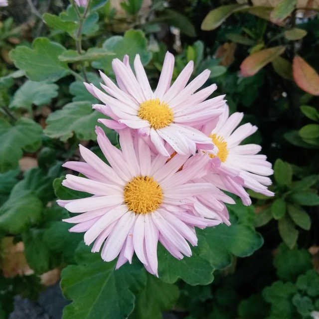
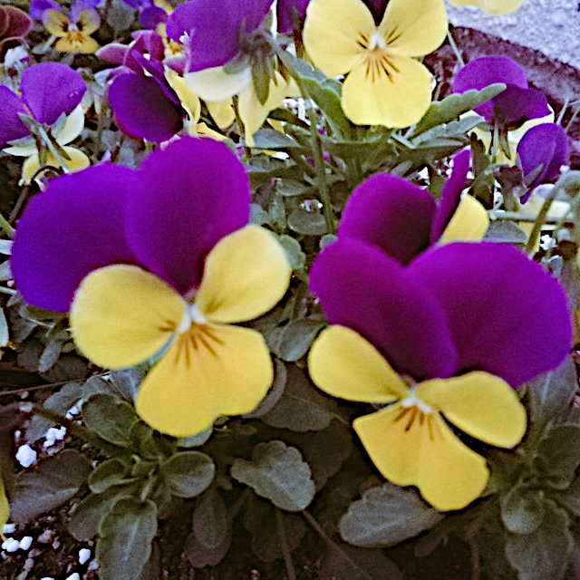
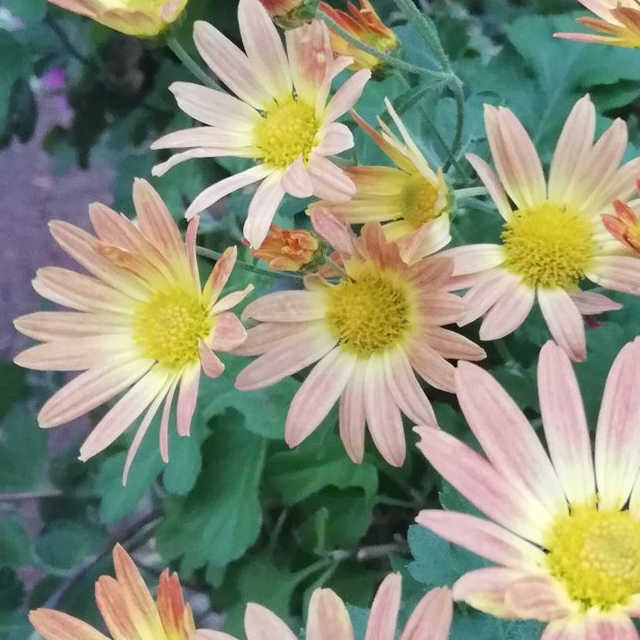

花を見れば、
花の魅力を実感できる
私たちの生活や、文化の身近にある存在、花。
見ているようで、実は見ていなかった、
可愛らしい花たちには、様々な魅力があります。
-
Point.1
美しさ、華やかさ花には私たちの感覚を掻き立て、
魅了する美しさや華やかさ、
優しさがあります。
これらに気付くことで、
多くの感動が得られます。 -
Point.2
季節を身近に感じる花や緑を見ることで、
季節を感じ取ることができます。
これは、花を見ることで、
季節を楽しむことができます。 - 
-
Point.3
いろいろな花の種類花には、種類の多さと多様さがあります。
いろいろな種類の花を、
見ることによって、
自然の中で植物が、
共生している姿が見れます。 - 
-
Point.4
花が与える心の動き赤色や黄色の花を見ると、
行動力を湧き立てます。
緑色は、気分を落ち着かせ、
紫色はストレス解消効果など、
花には、心にも良い効果を与えます。 - 
-
Point.4
あなたを癒す存在花は視覚や嗅覚、
触覚などの五感を刺激し、
人の脳に影響を与えて、
活性化させてくれます。
そのため、
綺麗な花を見ると心が安らいだり、
季節の花を見たり嗅いだりして
穏やかな気持ちになれます。